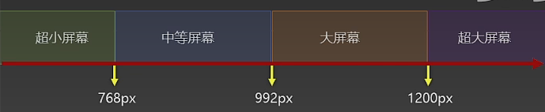

媒体查询运算符 值 含义 and 并且 , 或 or 或 not 否定 only 肯定 @media (main-width: 700px) and (max-width: 800px) @media screen and (main-width: 700px) or (max-width: 800px)
媒体查询常用阈值  使用方法1 可以为每一个阈值创建包含媒体查询的css样式,直接引入即可 方法2 为每一个阈值分别创建正常的css样式,不包含媒体查询，在引入时写判断